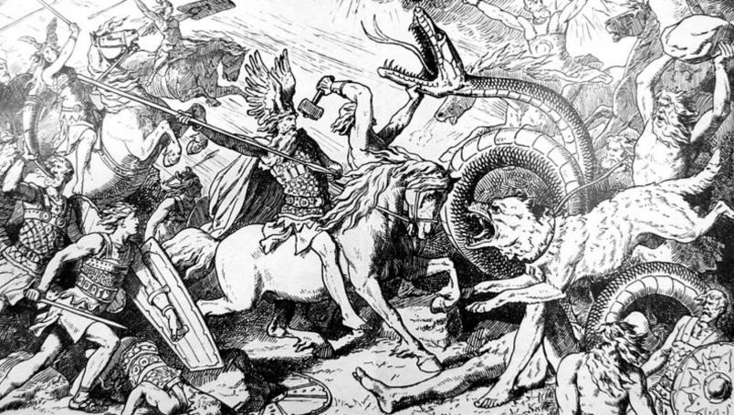

En la mitología nórdica el mundo está representado como un disco plano. El disco está situado en las ramas del árbol del mundo Yggdrasil, que sostenía los nueve mundos. En él habitaban varias criaturas entre las que destacamos a l as siguientes: un dragón llamado Nidhogg que habitaba en las raíces. Este dragón roía las raíces para derribar a un águila sin nombre (consiguiéndolo en el Ragnarök) que habitaba en la rama más alta, y desde ahí vigila los nueve mundos. Esta a su vez tiene un halcón llamado Veðrfölnir en el entrecejo, que vigila los movimientos del águila. Además, hay una ardilla llamada Ratatösk que corretea de las raíces a la copa llevando noticias falsas del dragón al águila, y viceversa, sembrando así la discordia entre ellos. Asgard, la región alta del cielo, (as- indica áss/Æsir, gard es asentamiento o residencia), donde vivían los dioses, estaba localizada en el centro del disco, y solamente podría llegarse hasta allí caminando por el arco iris (el puente Bifröst), guardado por Heimdall, quien estaba provisto de un gran cuerno con el que avisaba cada vez que un Æsir (dioses del panteón de la mitología nórdica) o un Vanir lo cruzaba. Los gigantes vivían en un lugar llamado Jötunheim.
Cada lugar tiene sus creencias hechas a medida, adaptadas a sus particularidades y a la forma de ser de sus gentes. La mitología nórdica, como las demás que existieron en el mundo, se compone de leyendas que narran grandes hazañas de dioses y héroes. Politeista, como todas las religiones y creencias antiguas, encuentra numerosos puntos en común con los mitos grecolatinos pero con versiones muy distintas. El mundo en el que Odín gobernó, Thor hizo resonar su trueno y Loki usó sus poderes de engaño sigue estando muy vivo.
Los dioses de Asgard, así como el resto de criaturas que poblaban los Nueve Reinos, eran la interpretación de los pueblos del norte de Europa a las tierras que ocupaban y a sus actos. La geografía de los países escandinavos había sido causada, obviamente, por el martillo del dios Thor y los fiordos no podían ser otra cosa que la entrada a la guarida de los trolls. Los pueblos vikingos dieron vida a un panteón completo de dioses que justificaban tanto el duro clima al que debían hacer frente como su forma de vida caracterizada por el ardor guerrero y por ello es interesante conocerla, ya que además de fascinante es una forma de comprender la mentalidad de estas gentes.
La importancia que las expediciones de saqueo adquirió dentro de la sociedad nórdica hizo que el morir en combate y demostrar valor se viese como algo positivo, ya que quienes caían probando su valor eran recibidos por los dioses para beber, comer y luchar por la eternidad (igual que en la tradición cristiana, por ejemplo, se recompensaba el cumplimiento de unas normas morales con la vida eterna). Así, de los hombres se esperaba que fuesen guerreros y padres de familia capaces de mantener y cuidad a los suyos mientras que, a través de dioses o figuras como las valquirias, se enseñaba a las mujeres a ser buenas esposas, madres y escuderas. El simbolismo de los dioses iba más allá que una explicación de los fenómenos naturales o una especie de guía de conducta, llegando incluso a reflejar la mentalidad y psicología de los vikingos. Si por ejemplo comparamos a Thor, dios del trueno, con Loki, dios del engaño, nos encontramos con la clásica dualidad materia-idea de Aristóteles y Platón. Thor animaba a los guerreros a actuar sin temor a las consecuencias mientras que Loki representaba los peligros y engaños de la mente. No resulta extraño que un pueblo de conquistadores diera tanta importancia al dios del martillo.
Los caracteres rúnicos han estado asociados siempre a cuestiones mágicas y místicas. La palabra runa ha generado mucha especulación; el vocablo gótico runa puede traducir el latino misterium "misterio, secreto". La antigua palabra inglesa rún significa "misterio; consejo; palabra". Probablemente la palabra runa tenga la misma etimología que la palabra alemana raunen, que quiere decir "adivinar". Las runas trasmiten, por consiguiente, un mensaje secreto. Nos remiten también a ciertos poemas eddicos que enumeran las cualidades mágicas de las "poderosas" runas. Cada signo rúnico tendría su propia cualidad. También se recuerda que aquellos que saben grabar las runas gozan de un prestigio muy especial: son los sabios y temibles "maestros de las runas". La razón por la que las runas han estado asociadas siempre a los secretos y misterios es un misterio en sí mismo
es la batalla del fin del mundo. Esta batalla será emprendida entre los dioses, los Æsir, liderados por Odín y los gigantes de fuego liderados por Surt, a los cuales también se les unen los jotun liderados por Loki. No solo los dioses, gigantes y monstruos perecerán en esta conflagración, sino que casi todo en el universo será destruido.
El Ragnarök será precedido por el Fimbulvetr, el Invierno de Inviernos: tres inviernos sucesivos se seguirán uno a otro sin verano. Como resultado, explotarán los conflictos y las peleas, y todos los mortales desaparecerán.
Después de una persecución perpetua, el lobo Sköll y su hermano Hati finalmente devorarán a la diosa Sól y a su hermano Máni, respectivamente. Las estrellas desaparecerán de los cielos, sumiendo la Tierra en la oscuridad.
La tierra se estremecerá tan violentamente que los árboles serán arrancados de raíz y las montañas caerán; cada unión y cada eslabón se romperá y se separará, liberando a Loki y su hijo, el lobo Fenrir. El terrible hocico de este lobo se abrirá tanto, que la parte inferior de su quijada raspará contra la tierra y la parte superior de su quijada ejercerá presión contra el cielo. Las llamas bailarán en sus ojos y saltarán de sus fosas nasales.